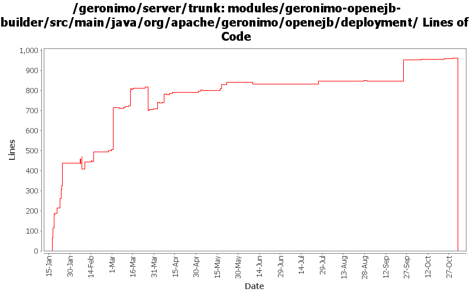

[root]/modules/geronimo-openejb-builder/src/main/java/org/apache/geronimo/openejb/deployment
 ejbref
(0 files, 0 lines)
ejbref
(0 files, 0 lines)

| Author | Changes | Lines of Code | Lines per Change |
|---|---|---|---|
| Totals | 130 (100.0%) | 2377 (100.0%) | 18.2 |
| dain | 42 (32.3%) | 1143 (48.1%) | 27.2 |
| djencks | 39 (30.0%) | 824 (34.7%) | 21.1 |
| dblevins | 27 (20.8%) | 366 (15.4%) | 13.5 |
| kevan | 6 (4.6%) | 29 (1.2%) | 4.8 |
| gawor | 4 (3.1%) | 11 (0.5%) | 2.7 |
| rickmcguire | 2 (1.5%) | 2 (0.1%) | 1.0 |
| dwoods | 1 (0.8%) | 1 (0.0%) | 1.0 |
| dims | 1 (0.8%) | 1 (0.0%) | 1.0 |
| prasad | 8 (6.2%) | 0 (0.0%) | 0.0 |
GERONIMO-3565. Modules distributed amongst framework/modules and plugins
0 lines of code changed in 8 files:
these settings should be in synch with what's set in OpenEjbSystemGBean especially since openejb-deployer does not start openejb gbeans now
2 lines of code changed in 1 file:
with recent KeyedCollection OpenEJB changes we must set the reference name before it is added to the collection since the underlying collection uses the reference name as a key in the map
4 lines of code changed in 1 file:
support for TimerService injection (GERONIMO-3455)
3 lines of code changed in 1 file:
GERONIMO-3514 Merge from branches/2.0. Avoid NPE when RA GBean does not hava a messageListenerToActivationSpecMap
3 lines of code changed in 1 file:
GERONIMO-3496 assemble servers out of plugins
0 lines of code changed in 1 file:
GERONIMO-3484 make openejb-deployer work when openejb is loaded but not started
158 lines of code changed in 1 file:
Blank out the EjbJar before configuration to ensure alt DDs can be supported
2 lines of code changed in 1 file:
Remove temporary debug statement from EjbRefBuilder
0 lines of code changed in 1 file:
A fix for app client refs to ejbs
2 lines of code changed in 1 file:
Unroll validation errors/failures into the message of the deployment exception so the client can pick them up. This may cause the server.log to get the info twice.
16 lines of code changed in 1 file:
GERONIMO-3307 Unit tests and a whole lotta fixes
1 lines of code changed in 1 file:
GERONIMO-3307 fix a problem with identifying which module a persistence unit is supposed to be associated
2 lines of code changed in 1 file:
GERONIMO-3246 Cleanup exception handling so stack traces for first failures are not discarded.
2 lines of code changed in 1 file:
GERONIMO-2687. Don't construct default and run-as subjects, get them from a login module. Also creates a separate server-security-config for the security config stuff you probably want to change. Also fixes lots of security problems, including mdb run-as handling.
33 lines of code changed in 1 file:
GERONIMO-3181 compute 'all' permissions from the actual service endpoint interface
5 lines of code changed in 1 file:
GERONIMO-3179 default jta and non jta datasources for generated cmp persistence units
13 lines of code changed in 1 file:
GERONIMO-3177 GERONIMO-3122 make exclude-unlisted-classes work. Also make jpa work in standalone ejb jars and wars
6 lines of code changed in 1 file:
In case a descriptor cannot be unmarshalled, write it to the temp directory for debugging purposes.
20 lines of code changed in 1 file:
Fix EJB deployment errors. The ClassLoader used during OpenEJB annotation processing did not include any application dependencies. So, NoClassDefErrors could occur during deployment. Seems to be fixed with these changes
10 lines of code changed in 1 file:
GERONIMO-3132 GERONIMO-3165. Fix a bunch of stuff with locating persistence.xml and persistence unit jars. Hook up with openejb for extended persistence contexts
9 lines of code changed in 1 file:
GERONIMO-3151 DeploymentUtil.recursiveDelete(File,Collection) is returning a collection of File objects, whereas most builders are expecting Strings
1 lines of code changed in 1 file:
GERONIMO-3134 GERONIMO-3136 Fix app client refs including ejb refs. Get a lot closer to jpa working on the app client
1 lines of code changed in 3 files:
GERONIMO-3131 GERONIMO-3132 GERONIMO-3133 GERONIMO-3134 Defaults for persistence units. Supply locations of jars with persistent classes to the PersistenceUnitInfo. Match a ref with not persistence unit specified to a unique match. Allow wars to have jndi references pointing to the war module, not just the ear
8 lines of code changed in 2 files:
Do not reprocess ejb-refs for EJB modules
6 lines of code changed in 1 file:
Use the new jndi name strategy in openejb which should fix the client ref issue
2 lines of code changed in 1 file:
JndiEncInfoBuilder api changed
6 lines of code changed in 1 file:
Fix compilation problem with recent openejb change in rev 527392, no apparent jira
13 lines of code changed in 2 files:
GERONIMO-3073 Make 'businiess home/localhome' methods unchecked (they are never called directly
7 lines of code changed in 2 files:
GERONIMO-3072 fix some ejb security problems
69 lines of code changed in 2 files:
Use proper approach to check if bean is stateless
3 lines of code changed in 1 file:
Preserve corba references in plans for the OpenEjbCorbaRefBuilder.
0 lines of code changed in 1 file:
Another attempt at making corba refs work
34 lines of code changed in 2 files:
Declare a dependency from the ejb module to resource adapters used by the mdbs
6 lines of code changed in 1 file:
Fix problem caused by use of Arrays internal class. You can't add entries to Arrays. Use java.util.ArrayList, instead.
4 lines of code changed in 1 file:
If the reference value is not an IntraVmJndiReference, don't attempt to process it.
9 lines of code changed in 1 file:
Added support for external ejb refs
Ejb module id is now the id declared in the plan or path within the ear
129 lines of code changed in 2 files:
Fix cross module JNDI link refs
93 lines of code changed in 2 files:
Updated for change in openejb jaxb api
5 lines of code changed in 2 files:
Fixed null pointer exception
6 lines of code changed in 1 file:
(47 more)